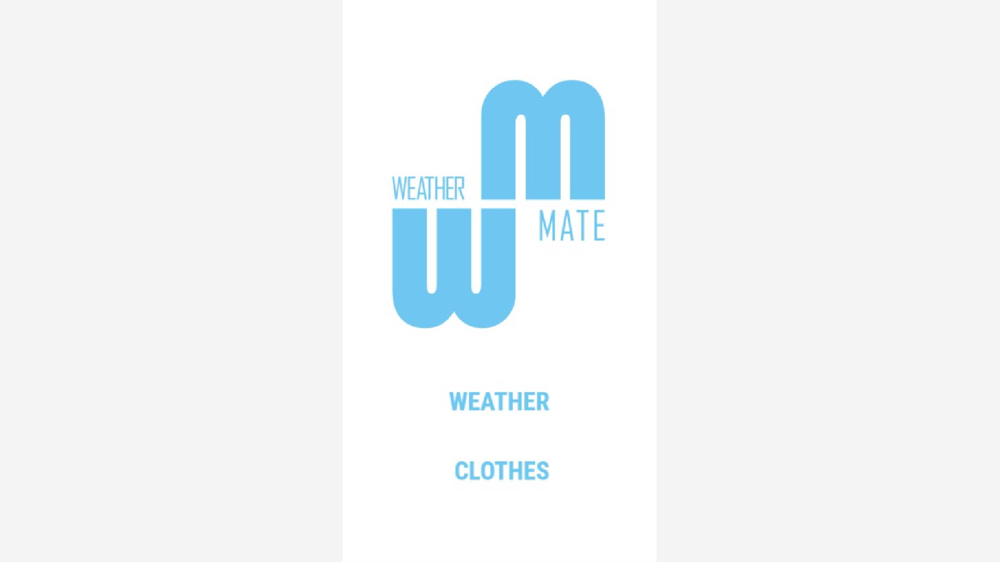

Forside - før
1 / 7
2 / 7

Forside - efter, nyt logo.
3 / 7

Dag tilstand
4 / 7

Aften tilstand - efter
5 / 7
Dag tilstand outfit - før
6 / 7

Aften tilstand outfit - Efter
7 / 7

dag tilstand, anden eksempel.
Dato: 29. Okt. 2018 - 1. Nov 2018
1 / 7
Forside - før
Forside - efter, nyt logo.
3 / 7
Dag tilstand
4 / 7
Aften tilstand - efter
5 / 7
Dag tilstand outfit - før
I dette projekt skulle der designes enten en sports-, bolig- eller vejr app, hvor jeg havde valgte at gå videre med vejr appen. - Valgte det ene og alene fordi det vækkede mest interesse hos mig.
Jeg tog en chance i dette projekt forløb og lavede derfor noget sjovere og mere fjollet end normalt, og endte derfor med en mere børnevenlig app, ved at tilføje ansigter og følelser til mine ikoner, som gik igennem appen.
Jeg valgte desuden også at tænke 'ud af boksen' i denne opgave ved at opfinde noget nyt som ikke er set i en vejr app før. Jeg valgt at lave sektionen "clothing" som er en tøj anbefalings side.